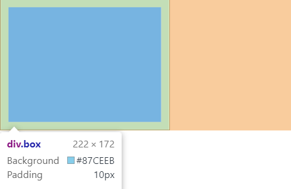

<!DOCTYPE html>
<html lang="en">
  <head>
    <meta charset="UTF-8" />
    <meta name="viewport" content="width=device-width, initial-scale=1.0" />
    <title>垂直居中问题:块元素（使用padding）</title>
    <style>
      /* padding是最简单粗暴的方式设置垂直居中 */
      .box {
        width: 15em;
        /* 不要设置高度，高度由padding挤出来 */
        /* height: 15em; */
        border: 1px solid #111;
      }
      /* 行内元素不能设置自己的宽高,只能设置容器的宽高 */
      .box a {
        /* 行内元素line-height属性的值和父级元素的行高一样,就可以实现居中 */
        line-height: 15em;
      }
      /* 行内块元素属于块元素范畴,line-height属性不起作用 */
      .box {
        padding: 5em 0;
      }
      .box > div {
        background-color: skyblue;
        width: 5em;
        height: 5em;
        /* margin: auto; */
      }
    </style>
  </head>
  <body>
    <div class="box">
      <!--  -->
      <div></div>
    </div>
  </body>
</html>
